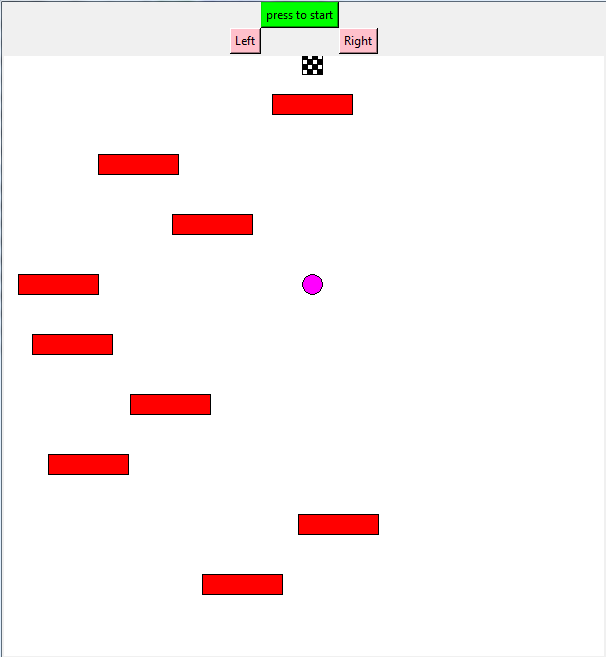
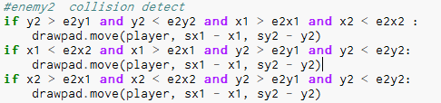

Project outline-I am going to make a game where the player starts at the top of the screen and is in a constant free fall towards the bottom of the screen. The rate at which the player falls is constant, and unchangeable, the only action that the player can do is use the "A" key and the "D" key to move left and right to dodge moving enemies. The goal of the game is to successfully make it from the top of the screen, to the bottom without running into any enemies.
Project reflections-After making my project, I think that I accomplished my initial idea very well. I do wish that I could have figured out a way to make the game more even more difficult as you progress, and maybe making different levels and different types of enemies and obstacles. Although overall, I am happy with the final result of the game.
Link to Github repository
This is the starting screen when you start my program, you have to press the start button and the game will then start.

This is the game in action, the player is at a constant fall once you start, and the goal is the use the left and right buttons to dodge the red enemies and to hopefully make it to the bottom of the screen without dying.

This is a section of code in which I struggled with because I had to make collision detection for all 4 sides of the enemy, so that if the player touched the enemy at any angle, the player would die.
This is my Burn down list that I used to make & plan my program